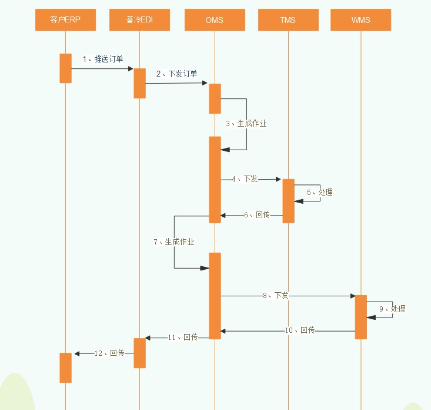
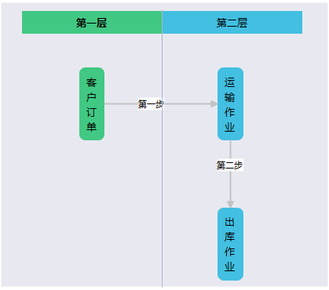
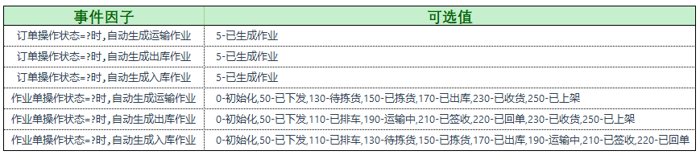
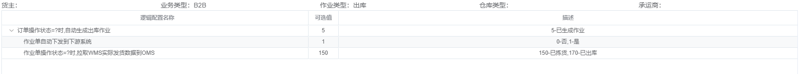
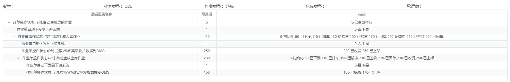
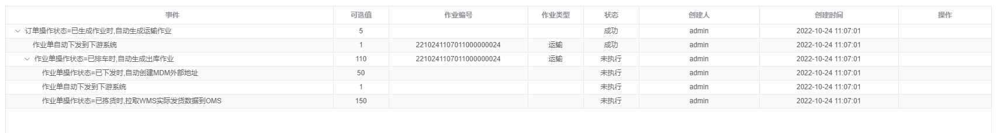

OMS设计总结
前言
普冷订单管理系统（下文统一使用OMS）是普冷WMS和TMS的订单入口，客户订单统一由OMS建单，经一定的逻辑处理后推送给下游系统进行作业。下游系统作业完毕之后，再将实际的作业数据进行回传OMS，整个数据流形成闭环。
目前OMS系统只处理ToB型业务订单，对ToC业务订单数据流暂不经OMS处理，仍然保持从ERP推送到普冷EDI，经EDI直接推送到WMS。电商订单实际发货信息也由WMS直接回传EDI，再由EDI回传ERP。
ToC业务的订单暂时不流入OMS考虑如下，这些考虑是结合普冷自身业务情况所得，不可一视同仁：
ToC订单对时效性要求高，经OMS后多系统之间相互交互数据链条复杂，影响作业效率同时对于电商来说订单取消概率大，多系统交互对于取消不及时，造成仓库错发误发，增大赔付率另外OMS现今更大的作用还是服务与普冷仓配一体项目的作业流程，为了打通WMS和TMS系统，ToC订单目前只做仓储业务，没有必要再进入OMS
设计思想
普冷整个系统数据流转图如下，下图为普冷业务最标准的仓配一体项目数据流转顺序：

在此基础上还会有其他业务场景：纯仓储业务、纯运输业务以及仓配一体业务的其他数据流转方式。其他的业务场景表现到图中无非就是少一些步骤或者改变步骤的执行顺序，总体流程大同小异。
OMS结构
从数据流转图中可以看出OMS在整个数据链路中所处的位置，OMS衔接了EDI和下游业务系统，是整个业务系统的中枢所在。
OMS在结构上设计为了两层结构：
客户订单：客户原始订单下游作业单：有原始订单根据不同的业务场景进行拆分，生成下游系统的作业单
第一层和第二层的转换关系需要带入具体的业务场景进行说明会更好理解，我们按照普冷目前的业务场景进行细化，分别介绍在不同业务场景下两者的变化关系。
仓配一体
仓配一体在实际业务中的表现用一句话概况就是，由普冷运输车队从普冷自由仓库提货后，送往客户指定目的地。
从这个场景中可以提炼出来，对于订单流的话，需要同时发往普冷的TMS和WMS系统，分别由车队排车和仓库发货。如果没有OMS的话，那么普冷两边的系统都要进行建单操作，人工操作麻烦。

引入OMS的两层结构，OMS的第一层保留客户的原始订单需求，在OMS中通过一定的策略配置，将客户原始订单拆分成两份作业单，一份发往TMS：运输作业，一份发往WMS：出库作业。这样既保留了客户原始订单，又对照了下游作业类型，同时减少人工操作，系统结构清晰。
对于第二层中的两个作业类型，系统也并不是同步产生两个作业单，在设计初期考虑到实际场景是：当TMS的排程排车信息结果出来后，需要将排车信息随订单一起下发给仓库进行作业。所以系统在产生两层作业时，采用了异步处理的方式：
第一层订单先生成运输作业运输作业下发TMSTMS排程排车信息回传OMSOMS的运输作业单状态更新，自动生成仓库的出库作业，下发WMS
这里主要解释仓配一体业务的结构，基于此结构，无论是纯仓储的业务还是纯运输的业务，在OMS的两层结构上无非就是少了一种作业类型而已，对于其他的系统流程和设计思想是一样的。
核心引擎
OMS毕竟不只是为了仓配一体出库这一个场景而生的，既然是仓储业务，那必定会有入库、出库、调拨等作业类型，而仓配一体只是出库类型下面的一个业务场景。
这里再描述一个复杂的业务场景：仓配一体+仓间中转，有北京仓库出库，经普冷北京运输车队先送往上海仓库集货后再由上海车队送往上海的门店（可能具体的业务也不会发生，但是系统设计还是要考虑最复杂的场景）。
从这个场景中能提炼出来：
北京仓库的出库作业北京运输的运输作业上海仓库的入库作业上海仓库的出库作业上海运输的运输作业
这么多的单据如果是通过人工在OMS中生成，工作量同样是很大的。
因此，我们在OMS两层结构中引入了新的机制：事件，事件分为两个部分：事件因子和事件配置，我们同样以举例的方式来说明：
例如1：在上述场景中，仓配一体在OMS中需要先生成一个运输作业，那么这就是一个事件，我们将其抽象为因子，再具体到系统里面就是：什么样的订单在什么时候要先生成一个运输作业。
例如2：将生成的作业单需要推送给下游系统，同样是一个事件，这样我们就得出一个因子：自动将作业单推送给下游系统
最终我们在系统里面实现的结果如下：

从上面表格中的事件因子名称不难猜出每个因子是做什么的，当我们把这些事件通过事件配置进行串联起来之后，我们就会得到以下结果：

或者是这样：

有了这样的事件配置之后，对应的订单将会按照这样此种配置场景进行执行：

这一套事件配置不仅给用户展示了不同业务场景下多系统订单流数据的可视变化，同时也对用户建单作业省去了可量化的操作成本。此事件功能为OMS设计的核心功能，又是订单流处理的引擎所在。
以上则为OMS作为2层结构的所有设计思想。